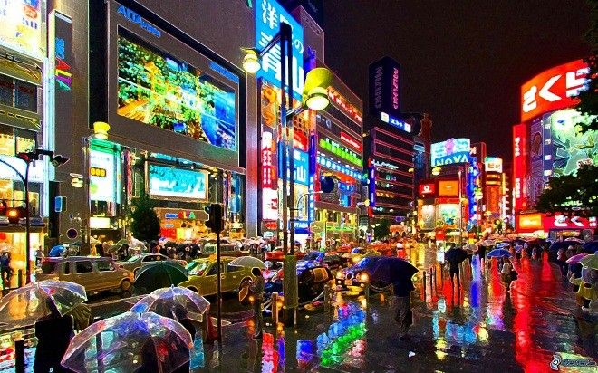

a contaminación es la introducción de algún tipo de sustancia o energía que atentará contra el normal funcionamiento y equilibrio que ostentaba el medio inicialmente, provocando además un daño casi irreversible.

La más conocida, es el tipo de contaminación que surge de la liberación de partículas de sustancias químicas a la atmósfera. También conocida como polución, es el tipo de contaminación que afecta a través del aire. Uno de los contaminantes más conocidos en este sentido son el CO2, el metano y el humo proveniente de la combustión.

Se trata del efecto de la emisión y liberación en las aguas de sustancias contaminantes. Se dificulta o altera la vida y el uso normativo, haciéndola no potable. Habitualmente esta contaminación es de origen industrial. Incluye la contaminación marítima, la cual haría referencia a la contaminación de los mares y océanos por la misma causa.

Provocada por la filtración de sustancias en el suelo, genera alteraciones físicas y químicas en éste que hacen que por ejemplo resulte inhabitable, se contaminen las aguas subterráneas o se imposibilite el crecimiento de vida en el área.
Se trata de uno de los tipos de contaminación más peligrosos y agresivos con la vida. Es producida por la liberación de material radiactivo y tiene efecto en cualquier superficie. Suele derivarse de la acción humana, como el vertido de residuos o desastres en plantas de energía nuclear como el de Chernobyl.
Uno de los tipos de contaminación menos conocidos, es generado por el cambio de temperatura en el entorno o en diferentes medios debido a la actividad humana.

A pesar de que en principio el concepto pueda asemejarse al de la contaminación lumínica, en este caso se hace referencia a la alteración del medio en base a estímulos visuales que no tienen que ver con la luminosidad. Por ejemplo, se refiere a los cambios visuales que se producen en la naturaleza debido a la actividad humana.

Se trata de uno de los tipos de contaminación en la que el elemento contaminante es visual. la contaminación lumínica el elemento contaminante en sí es la emisión de luz fuera de lo que sería natural, provocando problemas como la pérdida de orientación o los cambios en los biorritmos tanto de seres humanos como de otros animales.
Denominamos contaminación acústica a la emisión de sonido en una proporción, frecuencia, tono, volumen y ritmo excesivos que provocan una alteración en el medio o en los seres que lo habitan. Este tipo de contaminación es el que viven, por ejemplo, aquellas personas que viven en barrios muy turísticos en los que hay multitud de discotecas y establecimientos con música.
Aunque tal ves no es tan perceptible de manera directa por los seres humanos, se refiere a la contaminación derivada del uso de elementos eléctricos o que generen fenómenos electromagnéticos. Pueden generar desorientación y posibles daños en diferentes animales, y los efectos sobre los seres humanos aún son discutidos (vinculándose en ocasiones al cáncer, trastornos de la erección o algunos problemas mentales y físicos).
Se refiere a la presencia de diferentes sustancias en los alimentos que provocan efectos de diferente envergadura en quienes lo consumen. Por ejemplo, la contaminación del pescado por el mercurio proveniente de la contaminación hídrica o la provocada por la venta de alimentos en mal estado o infectados de alguna enfermedad.
Todo este proceso del reciclaje, pasa por varias fases:
El reciclaje comienza en entornos industriales y domésticos, mediante la separación de los materiales. El siguiente paso consiste en la recuperación de estos materiales por las empresas públicas y privadas y su posterior traslado a las plantas de transferencia.

En estas plantas, se almacenan y compactan grandes cantidades de residuos, para su posterior transporte en grandes cantidades hacia las plantas de reciclaje, llamadas plantas clasificadoras. Es aquí cuando se hace una separación exhaustiva de los residuos. En estas plantas, encontramos en algunos casos, las plantas de valoración, o reciclador final, donde se obtienen nuevas materias o productos, se almacenan los materiales en grandes vertederos, o bien se produce energía como es el caso de las plantas de biogas.
Si quieres saber más sobre el tema da click Aquí.
1.- Como ya he dicho anteriormente en mi comunidad la gente de la misma comunidad limpia las calles y recoge la basura.
2.-Educar en las escuelas sobre el cuidado al ambiente.
3.-Multar a las personas que contaminen.
4.-Plantar árboles para que tambien purifique el aire de la comunidad.
5.-Enseñar a hacer manualidades a los niños con materiales reciclados.